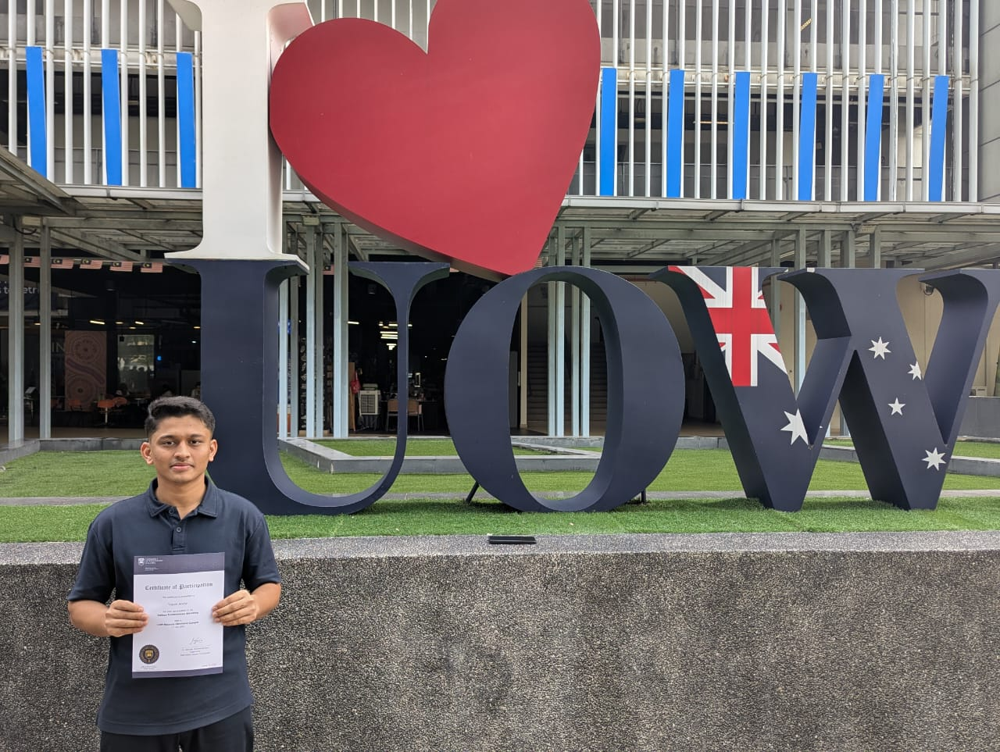

YEASIN ARAFAT
Computer Science Student , Web Developer ,
Graphic Designer

Computer Science undergraduate at the University of Wollongong Malaysia (UOW Malaysia) and recipient of the UOW High Achievers Scholarship, awarded in recognition of outstanding academic performance. Achieved GPA 5.00/5.00 in both SSC and HSC examinations. Possesses foundational knowledge in programming, web development, UI/UX design, and database systems, supported by practical experience in freelance and internship-based projects. Demonstrates strong analytical, problem-solving, and communication skills, with a commitment to continuous learning, professional development, and academic excellence.
Available for freelance work and collaboration Opportunities.

Top Coder of UOW Malaysia,

5th Position in university level competition

selected as best Presenter

Tableau Certified